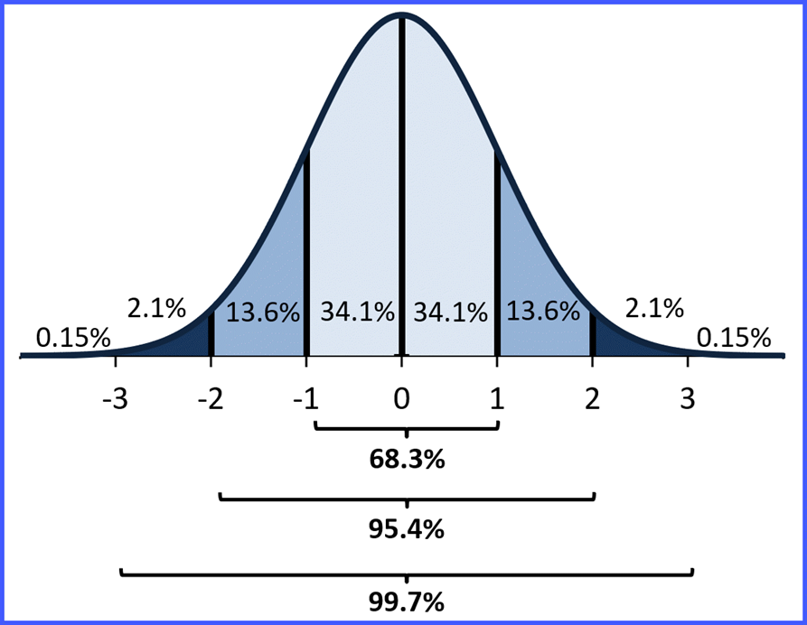
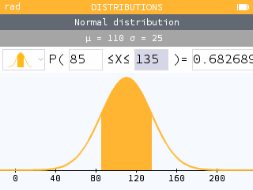
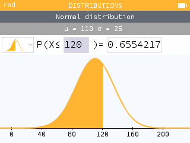

The Empirical Rule applies to mound-shaped distributions, where the curve increases to a peak and then decreases. This shape can be skewed or symmetric but cannot be uniform or bimodal. Derived from the normal distribution, the Empirical Rule provides exact percentages (not approximations) for normal curves:
Approximately 68% of the data fall within 1 standard deviation of the mean:
For a population: \(\mu - \sigma, \mu + \sigma\)
For a sample: \(\bar{x} - s, \bar{x} + s\)
Approximately 95% of the data fall within 2 standard deviations of the mean:
For a population: \(\mu - 2\sigma, \mu + 2\sigma\)
For a sample: \(\bar{x} - 2s, \bar{x} + 2s\)
Approximately 99.7% of the data fall within 3 standard deviations of the mean:
For a population: \(\mu - 3\sigma, \mu + 3\sigma\)
For a sample: \(\bar{x} - 3s, \bar{x} + 3s\)
The following image illustrates the Empirical Rule for a normal distribution:

To work with more precise probabilities beyond the Empirical Rule, use a standard normal table (z-table), available on the Unit III website, or a NumWorks Calculator. The table lists z-scores and their corresponding percentiles, proportions, or probabilities, allowing you to find exact areas under the normal curve.
Examples
Example 1: Female Heights and the Empirical Rule
Suppose the heights of females are normally distributed with \(\mu = 65\) inches and \(\sigma = 5\) inches. Using the Empirical Rule, calculate the intervals for the following percentages:
What range contains 68% of the heights?
68% of females have heights between \(65 - 5 = 60\) and \(65 + 5 = 70\) inches.
What range contains 95% of the heights?
95% of females have heights between \(65 - 2 \cdot 5 = 55\) and \(65 + 2 \cdot 5 = 75\) inches.
What range contains 99.7% of the heights?
99.7% of females have heights between \(65 - 3 \cdot 5 = 50\) and \(65 + 3 \cdot 5 = 80\) inches.
This distribution can be visualized as a bell-shaped curve with these intervals marked.
Example 2: Basketball Heights (Yao Ming and Brittney Griner)
Suppose NBA male heights are normally distributed with \(\mu = 79\) inches and \(\sigma = 3.5\) inches, and WNBA female heights are normally distributed with \(\mu = 69\) inches and \(\sigma = 3\) inches. Yao Ming is 90 inches tall, and Brittney Griner is 81 inches tall. Calculate the following using z-scores:
What is the probability of an NBA player being taller than Yao Ming?
Calculate the z-score: \( z = \frac{90 - 79}{3.5} = \frac{11}{3.5} \approx 3.14 \).
Using a z-table, \(z = 3.14\) corresponds to 0.9992 (area to the left). Thus, the probability of being taller is \(1 - 0.9992 = 0.0008\), or 0.08%.
What is the probability of a WNBA player being taller than Brittney Griner?
Calculate the z-score: \( z = \frac{81 - 69}{3} = \frac{12}{3} = 4.0 \).
Using a z-table, \(z = 4.0\) corresponds to 0.999968 (area to the left). Thus, the probability of being taller is \(1 - 0.999968 = 0.000032\), or 0.0032%.
These extremely low probabilities highlight how exceptional Yao Ming and Brittney Griner are in their respective leagues!
Example 3: IQ Test Scores
Suppose scores on an IQ test are normally distributed with \(\mu = 110\) and \(\sigma = 25\). Answer the following:
What is the probability of a score between 85 and 135 (1 standard deviation from the mean)?
Approximately 68% per the Empirical Rule, since \(110 - 25 = 85\) and \(110 + 25 = 135\).
What percentage of scores are below 120? (Use the z-table for precision.)
Calculate the z-score: \( z = \frac{120 - 110}{25} = \frac{10}{25} = 0.4 \).
Using a z-table, \(z = 0.4\) corresponds to approximately 0.6554, meaning 65.54% of scores are below 120.
Explore more examples using the calculator on the left or refer to the z-table on the Unit III website!
Example 4: Converting an ACT Score to an SAT Score
Suppose ACT scores are normally distributed with a mean (\(\mu\)) of 21 and a standard deviation (\(\sigma\)) of 5, and SAT scores (combined Evidence-Based Reading and Writing + Math, out of 1600) are normally distributed with a mean (\(\mu\)) of 1050 and a standard deviation (\(\sigma\)) of 200. You scored a 22 on the ACT and want to find the equivalent SAT score using z-scores.
Step 1: Calculate the z-score for an ACT score of 22.
Using the z-score formula: \( z = \frac{x - \mu}{\sigma} \), where \(x = 22\), \(\mu = 21\), and \(\sigma = 5\):
\( z = \frac{22 - 21}{5} = \frac{1}{5} = 0.2 \).
This means your ACT score is 0.2 standard deviations above the mean.
Step 2: Find the equivalent SAT score using the z-score.
For the SAT, use the z-score formula rearranged: \( x = \mu + z \cdot \sigma \), where \(\mu = 1050\), \(\sigma = 200\), and \(z = 0.2\):
\( x = 1050 + 0.2 \cdot 200 = 1050 + 40 = 1090 \).
So, an ACT score of 22 corresponds to an SAT score of approximately 1090.
Step 3: Interpret the result.
A z-score of 0.2 indicates your score is slightly above average. Using a z-table, \(z = 0.2\) corresponds to a percentile of approximately 57.93%, meaning about 57.93% of test-takers score below you on either test, confirming the equivalence.
This method assumes the percentile ranks of the ACT and SAT align via their normal distributions, providing a practical way to compare scores across tests!
Calculator Help
Calculating Normal Probabilities on a NumWorks Calculator
The NumWorks calculator can compute probabilities for a normal distribution using the Normal Distribution function. Follow these steps to find the probability of a value falling within a specific range (e.g., \(P(a < X < b)\)):
Open the Distributions App: From the home screen, scroll to Distributions, and press OK.
Select Normal Distribution: Choose Normal, and press OK.
Enter Parameters:
Mean (\(\mu\)): Enter the mean.
Standard Deviation (\(\sigma\)): Enter the standard deviation.
Select Next and press OK.
Choose the appropriate inequality option to the left of the P: Less Than, In-Between, or Greater Than.
Enter the value(s) of interest in the box(es) inside the parentheses. Press OK.
The probability is to the right of the equals sign.
Example:
To find the probability of an IQ score between 85 and 135 (\(\mu = 110\), \(\sigma = 25\)):
Go to Distributions > Normal.
Enter 110 for the mean and 25 for the standard deviation (\(\mu = 110\), \(\sigma = 25\)).
Choose "In-Between" and enter: Lower = 85, Upper = 135.
Press OK. The result should be approximately 0.68 (68%), matching the Empirical Rule.

NumWorks gives 0.6827. This is the probability.
For probabilities below a value (e.g., \(P(X < 120)\)), choose the "Less Than" option and input 120 as the value of interest. The result is 0.6554.

Z-Score Percentage Table
This table provides the cumulative probability (area to the left) for selected z-scores under the standard normal curve. The z-score represents the number of standard deviations a value is from the mean (\(\mu = 0, \sigma = 1\)). Use this table to find precise probabilities beyond the Empirical Rule.
For example, a z-score of 1.00 corresponds to 0.8413, meaning 84.13% of the data lies below this value. To find the area to the right, subtract from 1 (e.g., \(1 - 0.8413 = 0.1587\) or 15.87%).
Standard Normal Z-Table
z-score
Probability (Area to Left)
z-score
Probability (Area to Left)
0.0
0.5000
2.0
0.9772
0.1
0.5398
2.1
0.9821
0.2
0.5793
2.2
0.9861
0.3
0.6179
2.3
0.9893
0.4
0.6554
2.4
0.9918
0.5
0.6915
2.5
0.9938
0.6
0.7257
2.6
0.9953
0.7
0.7580
2.7
0.9965
0.8
0.7881
2.8
0.9974
0.9
0.8159
2.9
0.9981
1.0
0.8413
3.0
0.9987
1.1
0.8643
3.1
0.9990
1.2
0.8849
3.2
0.9993
1.3
0.9032
3.3
0.9995
1.4
0.9192
3.4
0.9997
1.5
0.9332
3.5
0.9998
1.6
0.9452
4.0
0.999968
1.7
0.9554
4.5
0.999999
1.8
0.9641
5.0
0.99999997
1.9
0.9713
-
-
Notes:
For negative z-scores, use symmetry: \( P(Z < -z) = 1 - P(Z < z) \). For example, \( P(Z < -1.0) = 1 - 0.8413 = 0.1587 \).
For probabilities between two z-scores, subtract: \( P(a < Z < b) = P(Z < b) - P(Z < a) \).
This table is abbreviated. Full z-tables include more decimal precision (e.g., 0.00 to 0.09 for each integer z-value). Refer to the Unit III website for a complete version!